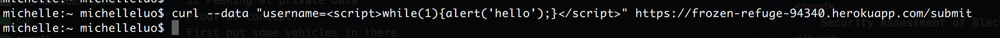

The product in evaluation is a location-based ride-hailing service. I was asked to do a security evaluation on the server.
I used cURL to test for common XSS/database injection attacks.
There were a variety of different issues: notable problems included vulnerabilities to denial-of-service attacks, leaking of private data and annoying popups.
By altering the query parameter on the /vehicle.json page, I was able to retrieve data that contained the username and location of another user that should have been kept private.
This is a high risk vulnerability: it compromises not only a driver's username, but also their exact physical location.
I found the problem after reading about MongoDB vulnerabilities: if a malformed query string is used, the bodyparser module interprets the query in a way that displays data that is NOT the data that you specify in the query.
Proof of concept:
First, put a vehicle in there with
curl --data "username=JANET" https://frozen-refuge-94340.herokuapp.com/submit
Visit the page at https://frozen-refuge-94340.herokuapp.com/vehicle.json?username[$ne]=
Resolution?
Make sure parameters are as expected.
I was able to inject malicious code into the database, creating annoying popups on the / page, effectively denying users access to the site. It was alarming how easy it was to deny users service to the site - all it takes is basic knowledge of Javascript and cURL.
I discovered the problem after attempting to throw in some Javascript functions in the database, then forcing the app to retrieve the malicious code from the database to display it on the / page. After I noticed it worked, I threw it into an infinite loop - as a result, the page never properly loads, effectively denying access to users.
Proof of concept:
First, use cURL to inject:

Then visit https://frozen-refuge-94340.herokuapp.com/
Resolution?
Sanitize all user input: strip away special characters before storing it anywhere.
In the GET /vehicle.json route, there were multiple calls to send an HTTP response for one request. Node.js does not like this. This risk is dangerous because an attacker could easily take down the server with a typo (as I did). However, user data does not seem to be compromised.
I actually accidentally stumbled upon this problem: I meant to visit https://frozen-refuge-94340.herokuapp.com/vehicle.json?username=JANET but accidentally forgot the query parameter, instead visiting https://frozen-refuge-94340.herokuapp.com/vehicle.json?username= .
Proof of concept:
Visit https://frozen-refuge-94340.herokuapp.com/vehicle.json?username= like I accidentally did. Should cause a Heroku application error.
Resolution?
Save the response in a local variable; send it at the last possible minute.
Sanitize user input. Make sure that the parameters given were the ones expected. Test corner cases locally.
http://stackoverflow.com/questions/38365084/error-cant-set-headers-after-they-are-sent-express-js
http://blog.websecurify.com/2014/08/hacking-nodejs-and-mongodb.html
https://media.blackhat.com/bh-us-11/Sullivan/BH_US_11_Sullivan_Server_Side_WP.pdf